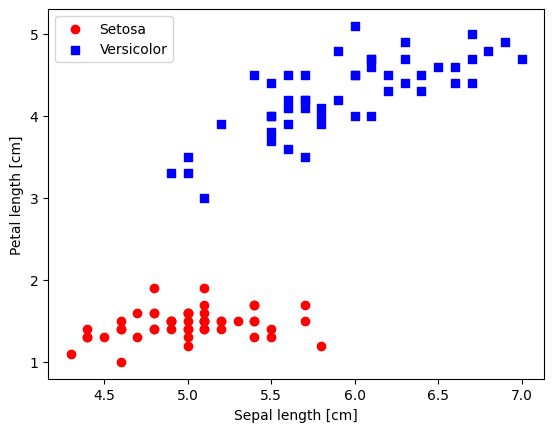
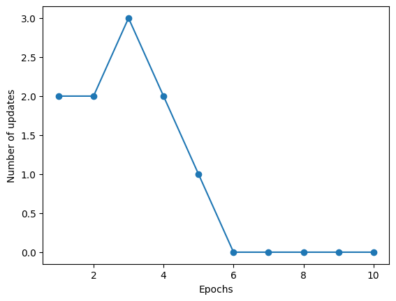
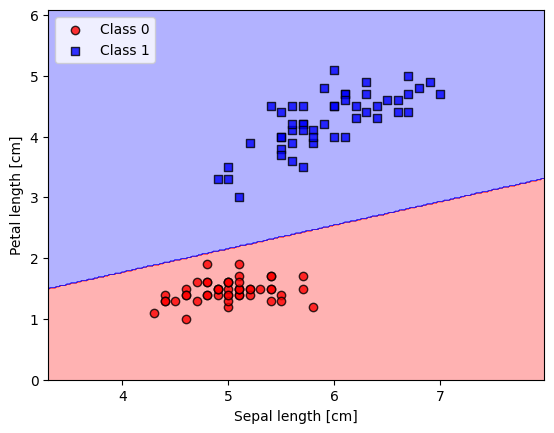
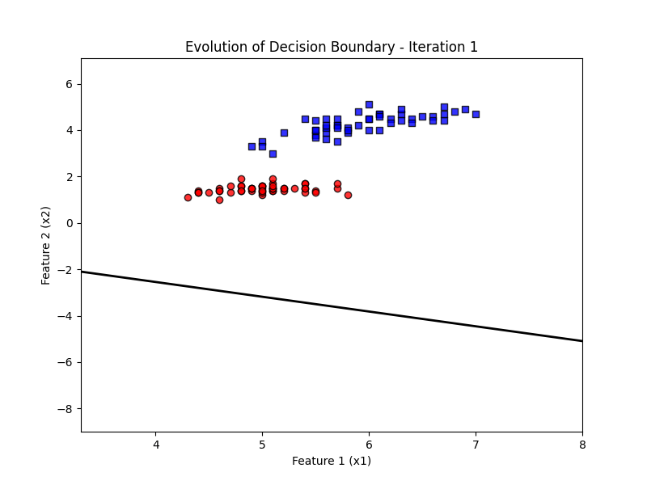

Implementation of a Perceptron in Python#
Source: NNDL 621
References:
Sebastian Raschka, Yuxi Hayden Liu, and Vahid Mirjalili. Machine Learning with PyTorch and Scikit-Learn: Develop machine learning and deep learning models with Python. Packt Publishing Ltd, 2022.
from IPython.display import Image
from IPython.display import display
display(Image(url="https://raw.githubusercontent.com/cfteach/NNDL_DATA621/webpage-src/DATA621/DATA621/images/perceptron_flowchart.png", width=700))

Perceptron Class Definition#
You will need to:
Implement the update rule
Implement the output activation (step function)
See the commented code below.
import numpy as np
class Perceptron:
"""Perceptron classifier.
Parameters
------------
eta : float
Learning rate (between 0.0 and 1.0)
n_iter : int
Passes over the training dataset.
random_state : int
Random number generator seed for random weight
initialization.
Attributes
-----------
w_ : 1d-array
Weights after fitting.
b_ : Scalar
Bias unit after fitting.
errors_ : list
Number of misclassifications (updates) in each epoch.
"""
def __init__(self, eta=0.01, n_iter=50, random_state=1):
self.eta = eta
self.n_iter = n_iter
self.random_state = random_state
def fit(self, X, y):
"""Fit training data.
Parameters
----------
X : {array-like}, shape = [n_examples, n_features]
Training vectors, where n_examples is the number of examples and
n_features is the number of features.
y : array-like, shape = [n_examples]
Target values.
Returns
-------
self : object
"""
rgen = np.random.RandomState(self.random_state)
self.w_ = rgen.normal(loc=0.0, scale=0.01, size=X.shape[1])
self.b_ = np.float64(0.)
self.errors_ = []
self.tmpw_ = []
self.tmpb_ = []
for _ in range(self.n_iter):
errors = 0
for xi, target in zip(X, y):
# From the lecture, we know both W and the bias share part of the update term eta*(y - net(x_i))
# Calculate this term and store it in the update variable below
# Hint: you may want to use the other function you will write with self.
update =
# Apply the updates to the weights - recall this is in the form of w -> w + eta*(y - net(x_i)) * x_i
self.w_ +=
# Apply the updates to the bias - recall this is in the form of b -> b + eta*(y - net(x_i))
self.b_ +=
errors += int(update != 0.0)
self.errors_.append(errors)
self.tmpw_.append(self.w_.copy()) # saved to show evolution
self.tmpb_.append(self.b_) # of decision boundary
return self
def net_input(self, X):
"""Calculate net input"""
return np.dot(X, self.w_) + self.b_
def predict(self, X):
"""Return class label after unit step"""
# For the predction, we will use a step function
# if the input is >= 0, we return 1 ; else return 0
# this should work for a vector of inputs
# Hint: You may find the function np.where() useful
return
Using the Iris dataset#
import os
import pandas as pd
try:
s = 'https://archive.ics.uci.edu/ml/machine-learning-databases/iris/iris.data'
print('From URL:', s)
df = pd.read_csv(s,
header=None,
encoding='utf-8')
except HTTPError:
s = 'iris.data'
print('From local Iris path:', s)
df = pd.read_csv(s,
header=None,
encoding='utf-8')
df.tail()
From URL: https://archive.ics.uci.edu/ml/machine-learning-databases/iris/iris.data
| 0 | 1 | 2 | 3 | 4 | |
|---|---|---|---|---|---|
| 145 | 6.7 | 3.0 | 5.2 | 2.3 | Iris-virginica |
| 146 | 6.3 | 2.5 | 5.0 | 1.9 | Iris-virginica |
| 147 | 6.5 | 3.0 | 5.2 | 2.0 | Iris-virginica |
| 148 | 6.2 | 3.4 | 5.4 | 2.3 | Iris-virginica |
| 149 | 5.9 | 3.0 | 5.1 | 1.8 | Iris-virginica |
num_unique_values = df[4].nunique()
print(f"Number of unique categories: {num_unique_values}")
unique_values = df[4].unique()
print(f"Unique categories: {unique_values}")
Number of unique categories: 3
Unique categories: ['Iris-setosa' 'Iris-versicolor' 'Iris-virginica']
Plotting the Iris data#
%matplotlib inline
import matplotlib.pyplot as plt
import numpy as np
# select setosa and versicolor
#y = df.iloc[0:100, 4].values
y = df.iloc[:, 4].values
X = df.iloc[:, [0, 2]].values # extract sepal length and petal length
# Map y values to 0, 1, or -1
y_mapped = np.select(
[y == 'Iris-setosa', y == 'Iris-versicolor'], # Conditions
[0, 1], # Values to assign if the condition is True
default=-1 # Value to assign if none of the conditions are True
)
mask = (y_mapped == 0) | (y_mapped == 1) # Mask for selecting only 0 and 1 in y_mapped
X_filtered = X[mask]
y_filtered = y_mapped[mask]
# Filter the first 50 occurrences of category 0
mask_0 = (y_filtered == 0)
X_0 = X_filtered[mask_0][:50]
# Filter the first 50 occurrences of category 1
mask_1 = (y_filtered == 1)
X_1 = X_filtered[mask_1][:50]
print(np.shape(X_0))
print(np.shape(X_1))
# plot data
plt.scatter(X_0[:, 0], X_0[:, 1],
color='red', marker='o', label='Setosa')
plt.scatter(X_1[:, 0], X_1[:, 1],
color='blue', marker='s', label='Versicolor')
plt.xlabel('Sepal length [cm]')
plt.ylabel('Petal length [cm]')
plt.legend(loc='upper left')
(50, 2)
(50, 2)
<matplotlib.legend.Legend at 0x7939dcb11b10>

Training the perceptron model#
ppn = Perceptron(eta=0.1, n_iter=10)
ppn.fit(X_filtered, y_filtered)
plt.plot(range(1, len(ppn.errors_) + 1), ppn.errors_, marker='o')
plt.xlabel('Epochs')
plt.ylabel('Number of updates')
plt.show()

Plotting decision regions#
from matplotlib.colors import ListedColormap
def plot_decision_regions(X, y, classifier, resolution=0.02):
# setup marker generator and color map
markers = ('o', 's', '^', 'v', '<')
colors = ('red', 'blue', 'lightgreen', 'gray', 'cyan')
cmap = ListedColormap(colors[:len(np.unique(y))])
# plot the decision surface
x1_min, x1_max = X[:, 0].min() - 1, X[:, 0].max() + 1
x2_min, x2_max = X[:, 1].min() - 1, X[:, 1].max() + 1
xx1, xx2 = np.meshgrid(np.arange(x1_min, x1_max, resolution),
np.arange(x2_min, x2_max, resolution))
lab = classifier.predict(np.array([xx1.ravel(), xx2.ravel()]).T)
lab = lab.reshape(xx1.shape)
plt.contourf(xx1, xx2, lab, alpha=0.3, cmap=cmap)
plt.xlim(xx1.min(), xx1.max())
plt.ylim(xx2.min(), xx2.max())
# plot class examples
for idx, cl in enumerate(np.unique(y)):
plt.scatter(x=X[y == cl, 0],
y=X[y == cl, 1],
alpha=0.8,
c=colors[idx],
marker=markers[idx],
label=f'Class {cl}',
edgecolor='black')
plot_decision_regions(X_filtered, y_filtered, classifier=ppn)
plt.xlabel('Sepal length [cm]')
plt.ylabel('Petal length [cm]')
plt.legend(loc='upper left')
plt.show()

import numpy as np
import matplotlib.pyplot as plt
from matplotlib.animation import FuncAnimation, PillowWriter
from matplotlib.colors import ListedColormap
# Example data (replace these with your actual data)
# X_filtered = np.array(...) # Your filtered data points
# y_filtered = np.array(...) # Your filtered labels
# ppn.tmpw_ = [...] # List of weight vectors for each iteration
# ppn.tmpb_ = [...] # List of biases for each iteration
# Set up marker generator and color map
markers = ('o', 's', '^', 'v', '<')
colors = ('red', 'blue', 'lightgreen', 'gray', 'cyan')
cmap = ListedColormap(colors[:len(np.unique(y_filtered))])
# Initialize the plot
fig, ax = plt.subplots(figsize=(8, 6))
# Plot the scattered data points
for idx, cl in enumerate(np.unique(y_filtered)):
ax.scatter(x=X_filtered[y_filtered == cl, 0],
y=X_filtered[y_filtered == cl, 1],
alpha=0.8,
c=colors[idx],
marker=markers[idx],
label=f'Class {cl}',
edgecolor='black')
# Initialize an empty line for the decision boundary
line, = ax.plot([], [], 'k-', lw=2)
# Set the plot limits
ax.set_xlim(X_filtered[:, 0].min() - 1, X_filtered[:, 0].max() + 1)
ax.set_ylim(X_filtered[:, 1].min() - 10, X_filtered[:, 1].max() + 2)
# Add labels, legend, and title
ax.set_xlabel('Feature 1 (x1)')
ax.set_ylabel('Feature 2 (x2)')
ax.set_title('Evolution of Decision Boundary')
# Update function for animation
def update(frame):
w = ppn.tmpw_[frame]
b = ppn.tmpb_[frame]
# Calculate decision boundary
x1_range = np.linspace(X_filtered[:, 0].min() - 1, X_filtered[:, 0].max() + 1, 100)
x2_boundary = -(w[0] * x1_range + b) / w[1]
# Update the line for the decision boundary
line.set_data(x1_range, x2_boundary)
ax.set_title(f'Evolution of Decision Boundary - Iteration {frame + 1}')
return line,
# Create the directory if it doesn't exist
if not os.path.exists('/tmpcontent'):
os.makedirs('/tmpcontent')
# Create the animation
ani = FuncAnimation(fig, update, frames=len(ppn.tmpw_), blit=True, repeat=True)
# Save the animation as a GIF
gif_path = '/tmpcontent/decision_boundary_animation.gif'
ani.save(gif_path, writer=PillowWriter(fps=2))
# Close the figure to prevent showing the static image
plt.close(fig)
# Display the GIF
from IPython.display import Image
Image(filename=gif_path)

Non-Linear Decision Boundary#
Now lets see how the perceptron performs when we have non-linear boundary. From the lecture, we know this was a major issue.
import numpy as np
import matplotlib.pyplot as plt
from sklearn.datasets import make_moons
from sklearn.preprocessing import StandardScaler
# Create the two moons dataset
X, y = make_moons(n_samples=200, noise=0, random_state=1)
# Standardize the data (important for better training)
sc = StandardScaler()
X_std = sc.fit_transform(X)
# Visualize dataset
plt.scatter(X_std[y == 0, 0], X_std[y == 0, 1], color='red', marker='o', label='Class -1')
plt.scatter(X_std[y == 1, 0], X_std[y == 1, 1], color='blue', marker='x', label='Class 1')
plt.title("Two Moons Dataset (non-linearly separable)")
plt.xlabel('Feature 1')
plt.ylabel('Feature 2')
plt.legend()
plt.show()
# Train your perceptron
# Hint: Use the above code - check variable names for x,y
# Plot errors per epoch - use same code as above
# Plot your decision region - you can use the same function as above
# Check what the arguments for the first two arguments should be
plot_decision_regions(, classifier=ppn)
plt.title('Perceptron - Decision Boundary on Two Moons')
plt.xlabel('Feature 1')
plt.ylabel('Feature 2')
plt.legend()
plt.show()